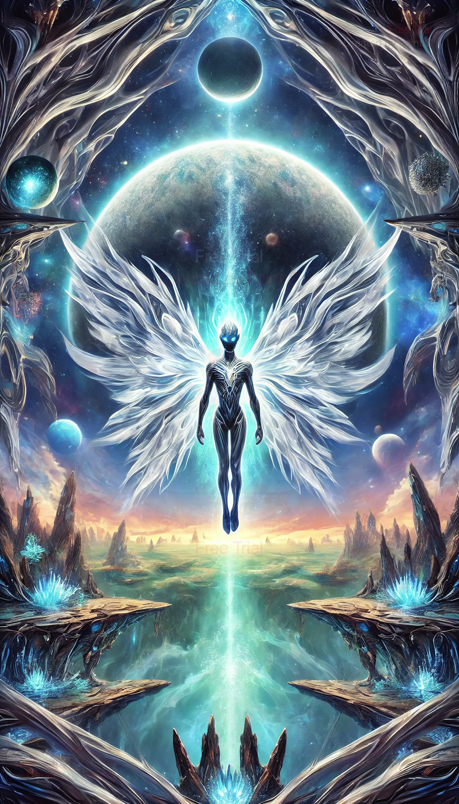

As the Celestial Wanderer, Lunaris embodies the boundless curiosity and resilience of a cosmic traveler.
Born from a supernova explosion, Lunaris explores the vast reaches of the universe, unraveling secrets of
creation and existence. Their journey through the celestial realms is a metaphor for the quest for knowledge,
reminding us that learning and discovery are infinite..As the Starbound Seeker, Lunaris is guided by an enchanted Astral Compass, navigating the stars in pursuit
of hidden truths and universal mysteries. With a deep connection to the cosmic energy, Lunaris weaves glowing
patterns of starlight, symbolizing their commitment to understanding the unknown and pushing the boundaries
of exploration.As the Cosmic Explorer, Lunaris stands confidently on a radiant platform of cosmic light, surrounded by a
digital aura that symbolizes their adaptability and wisdom. Their journey through the stars reflects the
importance of embracing change and discovering deeper truths. Lunaris inspires us to step boldly into the
unknown with courage and vision.